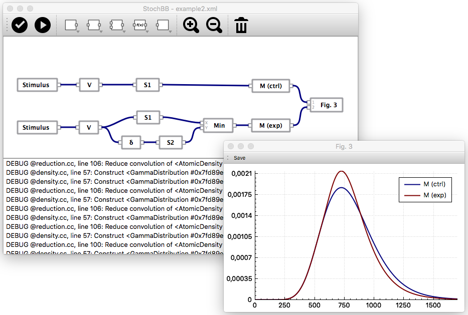

About StochBB

StochBB is a sofware framework and a graphical user interface program that allows to efficiently analyze complex systems of dependent random variables. For example, such networks are frequently used to describe cognitive processes and are usually analyzed by means of Monte Carlo type stochastic simulations. Although very flexible, the stochastic simulation approach requires a large number of samples to be drawn, for obtaining reliable statistics of the response variable of interest. In contrast to stochastic simulation, StochBB derives the marginal distributions of dependent random variables analytically and resorts to numerical solutions whenever the analytic approach fails. To achieve this, StochBB implements a rudimentary computer algebra system for systems of dependent random variables.
Releases
Version 1.0.2
This is the first public release.
| MacOS X 10.11+ | download (sig) |
Install StochBB
The installation of the MacOS X and Windows binaries is straight forward. If you are using Ubuntu Linux, there are pre-build binary packages available at my launchpad PPA. Simply follow the instructions there to add the PPA to your software sources and run
> sudo apt-get install stochbb
to install the StochBB GUI application. Alternatively, you may build and install StochBB from its sources.
License
StochBB - Stochastic building blocks. Copyright (C) 2016 Hannes Matuschek This program is free software: you can redistribute it and/or modify it under the terms of the GNU General Public License as published by the Free Software Foundation, either version 3 of the License, or (at your option) any later version. This program is distributed in the hope that it will be useful, but WITHOUT ANY WARRANTY; without even the implied warranty of MERCHANTABILITY or FITNESS FOR A PARTICULAR PURPOSE. See the GNU General Public License for more details. You should have received a copy of the GNU General Public License along with this program. If not, see www.gnu.org/licenses/.